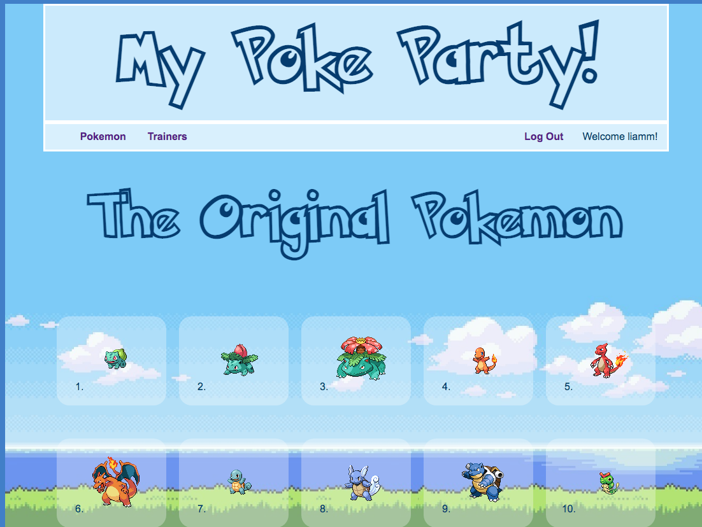

create your perfect party
MyPokeParty was my first project at Flatiron School. It is an interface where a user can create an account, find out a little information about the original 151 pokemon, and create their own party of 6.
The most challenging part of this project for me was seeding the database with data from the PokeAPI. What I am proudest of is the pixelated sprites!